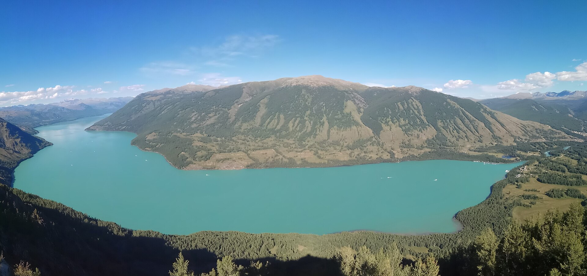
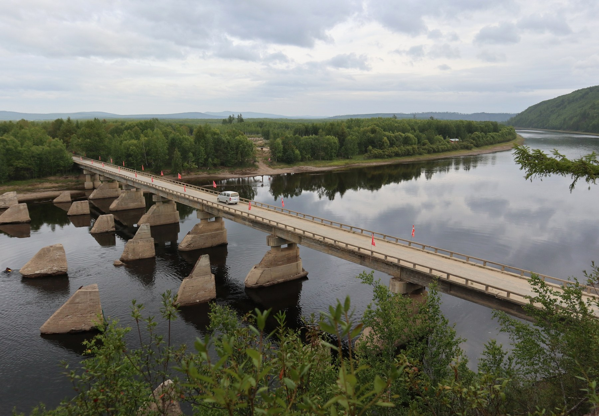

重点路线5 / 8天
重点路线5 / 8天
威海 / 青岛—威海—开封慢游线
青岛 · 威海 · 开封 · 郑州
双人总预算 ¥7,488–9,790三方案总边界
看海沿海自驾万岁山不爬山
 深度手册7天6晚
深度手册7天6晚
九寨沟七天水景草原奇观线
成都 · 黄龙 · 九寨沟 · 若尔盖 · 松潘
双人总预算 ¥7,800–12,9007天标准版
水色奇观黄龙彩池高原不辣友好
 已规划7 / 8天
已规划7 / 8天
稻城亚丁雪山海子中低徒步线
成都 · 稻城 · 香格里拉镇 · 亚丁
双人总预算 ¥9,100–19,862两方案总边界
雪山海子高原中低徒步
 已规划7天6晚
已规划7天6晚
张掖敦煌西北奇观线
张掖 · 嘉峪关 · 敦煌 · 鸣沙山
双人总预算 ¥6,500–15,000三档总边界
丹霞莫高窟沙漠关城
 已规划8天7晚
已规划8天7晚
青甘大环线八天七晚西北奇观线
西宁 · 青海湖 · 大柴旦 · 敦煌 · 张掖
双人总预算 ¥18,000–29,0008天舒适版
盐湖雅丹戈壁3000公里
 自然精简5天4晚
自然精简5天4晚
丽江玉龙雪山自然奇观线
丽江 · 虎跳峡 · 玉龙雪山 · 黑龙潭
双人总预算 ¥6,880–10,140含机票及4晚住宿
雪山峡谷蓝月谷纯自然景观
 新路线6天5晚
新路线6天5晚
张家界武陵源＋天门山山岳奇观线
武陵源 · 袁家界 · 天子山 · 天门山
双人总预算 ¥6,100–7,4906天标准版
峰林奇观索道电梯中等强度

新路线9天8晚阿勒泰喀纳斯禾木自然奇观线
乌鲁木齐 · 阿勒泰/布尔津 · 禾木 · 喀纳斯 · 白哈巴可选
双人总预算 ¥17,000–30,7009天舒适版
湖泊森林图瓦村落连住慢游中低步行

新路线8天7晚漠河北极村北红村边境奇观线
哈尔滨 · 漠河 · 北极村 · 北红村 · 第一湾
双人总预算 ¥14,500–24,8208天舒适版
极北边境黑龙江湾夏季长昼短步行
路线会持续增加；新卡片会自动沿网格排列，不挤压现有入口。票价、车次、开放时间以出发前官方页面为准。